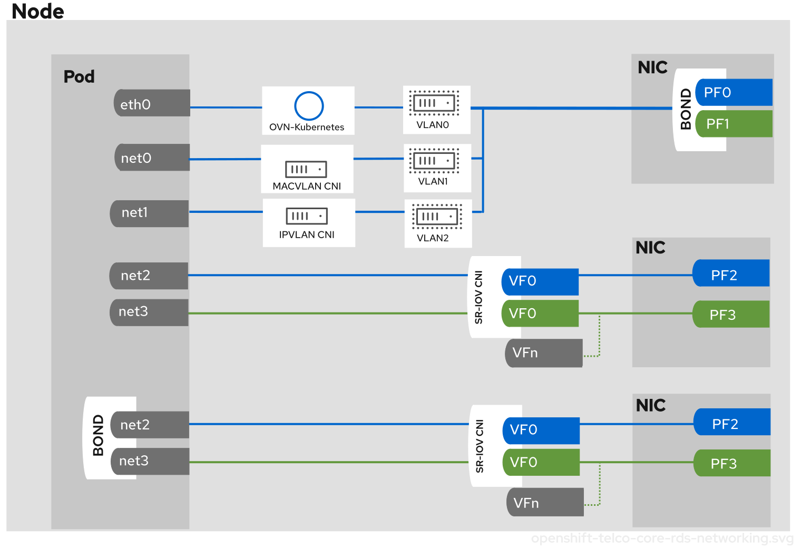

PolicyGen DeepDive
As we saw in an earlier section of the lab, we can leverage RHACM policies to get our clusters configured the way we want. We also introduced the Policy Generator component which helps us to create a set of policies based on pre-baked templates (source-crs) crafted by the Red Hat CNF team.
In this section, we are going to get into the implementation details of the Policy Generator plugin.
| In Red Hat OpenShift 4.16 a new templating mechanism called Red Hat Advanced Cluster Management for Kubernetes (RHACM) Policy Generator was released to eventually replace Policy Generator Template (PGT) as the standard way to generate Red Hat Advanced Cluster Management for Kubernetes policies. Currently, both mechanisms can be used in GitOps ZTP to generate RHACM policies for managed clusters. However, using RHACM and PolicyGenerator CRs is the recommended approach for managing policies and deploying them to managed clusters. This replaces the use of PolicyGenTemplate CRs for this purpose which will be deprecated in an upcoming OpenShift Container Platform release. More information about the differences between them can be found in this blog. |
PolicyGen Implementation
The PolicyGen is implemented as a Kustomize generator plugin called policygenerator. This allows for any Kustomize configuration (e.g. patches, common labels) to be applied to the generated policies. This also means that the policy generator can be integrated into existing GitOps processes that support Kustomize, such as RHACM Application Lifecycle Management and OpenShift GitOps (i.e. ArgoCD).
The policygenerator plugin reads the PolicyGenerator manifests and generates the required Kubernetes manifest to configure an RHACM Policy targeting a set of clusters. Code is located in the policy-generator-plugin Git repository.
Kustomize Plugins
As we already said, PolicyGen is a Kustomize plugin. Kustomize plugins work as described below.
| When installing these tools in ArgoCD running on a hub cluster the configuration described in this section is handled automatically. The ArgoCD operator will find the plugin binaries and use them to generate CRs from PolicyGenerator manifests. This section is provided as background/reference. |
The user has a path configured in Kustomize for plugins (defaults to ~/.config/kustomize/plugin/), inside this path different folders are configured in a way that Kustomize can understand what plugin needs to be executed under which situation. Let’s explain this.
If we look at this kustomization.yaml:
apiVersion: kustomize.config.k8s.io/v1beta1
kind: Kustomization
generators:
- common-policies/common.yamlWe see that under generators section we have a yaml file, generators tell Kustomize that some plugin needs to be run to interpret these files. The way Kustomize knows which plugin needs to be executed is by looking at the GroupVersionKind (GVK) of the files. Following with above example we will see the following GVK:
common-policies/common.yaml
apiVersion: policy.open-cluster-management.io/v1
kind: PolicyGeneratorAs we can see the group is policy.open-cluster-management.io, version is v1 and kind is PolicyGenerator.
Earlier, we talked about the Kustomzie plugins path, and how it is required to have a proper folder structure so Kustomize knows which plugin needs to be executed. Using the example above we can explain what Kustomize will do for generating this file.
common-policies/common.yaml
Kustomize will get the GVK and after that will go to the plugins path and execute the plugin binary, the path for the binary is $KUSTOMIZE_PLUGINS_PATH/<group>/<version>/<kind>/<pluginbinary>. In this case Kustomize will execute the binary at ~/.config/kustomize/plugin/policy.open-cluster-management.io/v1/policygenerator.
Policy Generator
The policygenerator plugin reads the PolicyGenerator manifests and uses the information provided in these files to output a set of RHACM policies that will be used for different purposes, from day2ops to monitoring the cluster health. It makes use of templated policies that can be found here.
| A high level view of the installation and configuration workflow can be found in the previous section ZTP workflow. |
Telco Core Profile
The Red Hat CNF team has crafted specific configurations to run large-scale telco applications on OpenShift Container Platform clusters. These include control plane functions such as signaling and aggregation, as well as centralized data plane functions like 5G User Plane Functions (UPF). All the configurations described below are expected to be present in a cluster running Telco Core workloads.
| Some of these configurations are applied at install time (through the use of extra-manifests) and others are configured through Policy automatically after the cluster joins the RHACM Hub. |

The picture above describes the networking topology covered by the Telco Core profile. A more in-depth explanation is covered in the Telco Core reference design components.
CPU Partitioning and Performance Tuning
CPU partitioning improves performance and reduces latency by separating sensitive workloads from general-purpose tasks, interrupts, and driver work queues. Unlike the RAN DU profile, Telco Core clusters use the standard (non-realtime) kernel with IRQ balancing enabled on worker nodes.
| CPU partitioning must be configured during the initial day-zero cluster installation and cannot be enabled or changed afterwards. |
Key capabilities:
-
Enables kubelet features: cpu manager, topology manager, memory manager.
-
Configures reserved and isolated cpusets.
-
Configures huge pages.
-
Supports per-pod power management via C-states for latency-sensitive workloads.
Power Management
Use the PerformanceProfile CR to configure clusters with high power mode, low power mode, or mixed mode depending on workload latency requirements. Per-pod power management via C-states is available for Guaranteed QoS pods with dedicated pinned CPUs, allowing fine-grained latency control per workload.
Power configuration relies on appropriate BIOS configuration (C-states and P-states enabled). Configuration varies between hardware vendors.
Workloads on Schedulable Control Planes
Telco Core supports an optional schedulable control plane variant that allows user workloads to run on bare-metal master nodes to optimize resource utilization. This feature is only applicable to clusters with bare-metal control plane nodes.
Enabling schedulable control planes can be configured either at install time or as a Day 2 operation after the initial cluster installation.
| Workloads running on control plane nodes must be tested and verified to ensure they do not interfere with core cluster functions. Any workload that reconfigures kernel arguments or system-wide sysctls is not permitted on control plane nodes. |
Node Configuration
Node configuration for Telco Core clusters is applied at install time through extra-manifests. These manifests configure kernel modules, mount namespaces, and crash reporting required by telco workloads.
The following extra-manifests are applied during installation:
-
control-plane-load-kernel-modules.yaml — loads additional kernel modules (nfnetlink_log, nf_tables, nft_nat, ip_gre, sctp, and others) on control plane nodes.
-
worker-load-kernel-modules.yaml — loads the same set of additional kernel modules on worker nodes.
-
sctp_module_mc.yaml — optional manifest to load the SCTP kernel module on worker nodes.
-
mount_namespace_config_master.yaml — creates a container mount namespace on control plane nodes to reduce system mount scanning overhead (visible to kubelet/CRI-O).
-
mount_namespace_config_worker.yaml — same as above for worker nodes.
-
kdump-master.yaml — configures kdump crash reporting on master nodes.
-
kdump-worker.yaml — configures kdump crash reporting on worker nodes.
The following optional custom-manifests define additional MachineConfigPool worker roles for MCP-based node grouping, which is critical for minimizing upgrade windows:
-
More MachineConfigPools can be created depending on your cluster topology.
Service Mesh
Telco Core cloud-native functions (CNFs) typically require a Service Mesh implementation. The specific Service Mesh features, performance requirements, and choice of implementation are dependent on the application and are outside the scope of the reference design. The implementation must account for the impact on cluster resource usage and the additional latency introduced in pod networking.
Cluster Network Operator
The Cluster Network Operator (CNO) deploys and manages cluster network components including the default OVN-Kubernetes network plugin. It enables multiple secondary networks for traffic separation (MACVLAN, additional CNI configurations) and configures OVN-K with the routingViaHost option so that pod egress traffic uses the kernel routing table and applied static routes.
The Whereabouts CNI plugin provides dynamic IPv4 and IPv6 addressing for additional pod network interfaces without requiring a DHCP server.
Load Balancer (MetalLB)
MetalLB is the load-balancer implementation for Telco Core bare-metal clusters. It uses BGP to advertise service IP addresses externally and enables Kubernetes services to get external IPs added to the host network. Traffic separation across VLANs is achieved by combining BGPAdvertisement, BGPPeer, and NodeNetworkConfigurationPolicy CRs.
SR-IOV
SR-IOV enables physical functions (PFs) to be divided into multiple virtual functions (VFs) assigned to pods for high-throughput networking. Both netdevice (kernel VFs) and vfio (DPDK) modes are supported. SR-IOV is used for signaling workloads (SCTP, REST, gRPC) and user-plane DPDK networking.
The SR-IOV Network Operator automatically enables IOMMU on the kernel command line when configured.
NMState Operator
The Kubernetes NMState Operator provides a Kubernetes API for performing state-driven network configuration across cluster nodes. It manages VLANs, bonding (LACP), static routes, MTU settings, and host interface configuration. It is also used to configure SR-IOV VF interfaces (VLANs, MTU) when VFs are used for host networking.
Log Collector and Forwarder
The Cluster Logging Operator enables collection and shipping of audit and infrastructure logs off the node to a remote archive using Kafka. Application logs are not included in the reference configuration.
| Logging is optional in the Telco Core RDS. Including application logs requires evaluating the logging rate and allocating sufficient additional CPU resources to the reserved set. |
Storage — OpenShift Data Foundation
Telco Core applications require highly available persistent storage. OpenShift Data Foundation (ODF) is reommended to be deployed in external mode, where ODF connects to a dedicated external Red Hat Ceph Storage cluster. This approach allows the storage cluster to be shared across multiple OCP clusters in the same region and enables independent lifecycle management of storage and OCP infrastructure.
| Storage network traffic should be isolated from other cluster networks using VLAN isolation to reduce security risk. |
Monitoring
The Cluster Monitoring Operator (CMO) provides metrics, dashboards, and alerting for platform components and user projects. For Telco Core the reference configuration reduces the Prometheus retention period from the default (primary metrics storage is external to the cluster) and extends Prometheus to forward alerts to the RHACM hub for aggregation.
| The monitoring configuration is optional in the Telco Core RDS. The CMO is included by default in OpenShift Container Platform; only the custom tuning ConfigMap is optional. |
NUMA-Aware Scheduling
The NUMA Resources Operator (NROP) enables topology-aware scheduling so that pods requiring exclusive or dedicated CPUs are placed on nodes where the required CPUs are available within a single NUMA node. This is required for clusters with multi-NUMA node hardware.
Disconnected Environment
Telco Core clusters are installed in networks without direct internet access. All container images (OCP, Day 2 OLM Operators, application workloads) must be available in a disconnected registry. A unique name is required for all custom CatalogSource resources.
Security
Telco Core clusters require hardening against multiple attack vectors. Key security configurations include:
-
Rootless DPDK pods: conformant DPDK pods can run without root privileges using a tap device. Requires the
container_use_devicesSELinux boolean to be enabled on the host. -
Seccomp: all pods should run with the
RuntimeDefault(or stronger) seccomp profile. -
SecurityContextConstraints (SCC): all workload pods should run with
restricted-v2orrestrictedSCC. -
Storage network isolation: the storage network must not be reachable or routable from other cluster networks.
-
Secure boot: the recommended boot configuration to ensure only signed kernel modules are loaded.
Policies Templating
Policies templating is a bit different, we have a set of base configuration CRs, known as source-crs, that we can use. This set of CRs can be found here.
If you access this link you will see lots of files divided into required and optional sections.
These CRs are referenced (by filename) from the PolicyGenerator CRs in Git. The PolicyGenerator CRs act as a manifest of which configuration CRs should be included and how they should be combined into Policy CRs. In addition, the PolicyGenerator can contain an "overlay" (or patch) that is applied to the CR before it is wrapped into the Policy.
The way this works is a follows. We will have one or more PolicyGenerators where we will reference these base configuration CRs. We can see an example here.
Let’s use the following PolicyGenTemplate as example.
apiVersion: policy.open-cluster-management.io/v1
kind: PolicyGenerator
metadata:
name: "test"
namespace: "test"
placementBindingDefaults:
name: test-placement-binding
policyDefaults:
namespace: ztp-policies
placement:
labelSelector:
group-du-sno: ""
logicalGroup: "active"
remediationAction: inform
severity: low
namespaceSelector:
exclude:
- kube-*
include:
- '*'
evaluationInterval:
compliant: 10m
noncompliant: 10s
policies:
- name: test-policy
policyAnnotations:
ran.openshift.io/ztp-deploy-wave: "10"
manifests:
- path: reference-crs/required/networking/sriov/SriovOperatorConfig.yaml
- path: reference-crs/required/performance/PerformanceProfile.yaml
patches:
spec:
cpu:
isolated: "2-19,22-39"
reserved: "0-1,20-21"
hugepages:
defaultHugepagesSize: 1G
pages:
- size: 1G
count: 32We can see that the PolicyGenerator is targeting two base configuration CRs: SriovOperatorConfig.yaml and PerformanceProfile.yaml.
The first source CR, SriovOperatorConfig.yaml, is not overriding any settings, we can tell this because we don’t have any patches section below the path. That means that the final policy will include the configuration CR without modification (base SriovOperatorConfig configuration CR).
The second source CR, PerformanceProfile.yaml, is overriding some parameters in the spec. That means that the final policy will be configured as a merge of the original CR plus the custom overrides we provided in the PolicyGenerator.
Policies Custom Templating
In the previous section we have seen how we can use pre-defined templates to craft our policies, sometimes we may need to configure things that do not have a specific template pre-defined. In such cases, we can create our own templates by creating the template files within the same repository. Complete information can be found in the docs.
Running Kustomize Plugins Locally
We have described how Argo CD makes use of the policygenerator plugin to generate the required manifests for our 5G Core deployments. In this section, we are going to cover how to run this plugin locally which can be useful while troubleshooting or getting a preview of what the files will look like when generated via Argo CD.
By running the steps below we will get the plugin installed in our system. Kustomize should be already installed, you can get it from the releases page.
mkdir -p ~/.config/kustomize/plugin
mkdir -p ~/.config/kustomize/plugin/policy.open-cluster-management.io/v1/policygenerator
podman cp $(podman create --name policygentool --rm registry.redhat.io/rhacm2/multicluster-operators-subscription-rhel9:v2.15.1-1):/policy-generator/PolicyGenerator-not-fips-compliant ~/.config/kustomize/plugin/policy.open-cluster-management.io/v1/policygenerator/PolicyGenerator
podman rm -f policygentoolNow that we have the plugins locally we can run them:
We need to enable the alpha plugins by using the parameter --enable-alpha-plugins
|
kustomize build site-policies/ --enable-alpha-pluginsWe will get the output (manifests that will be consumed by the RHACM Hub).
apiVersion: v1
kind: Namespace
metadata:
labels:
name: ztp-policies
name: ztp-policies
---
<OUTPUT_OMITTED>